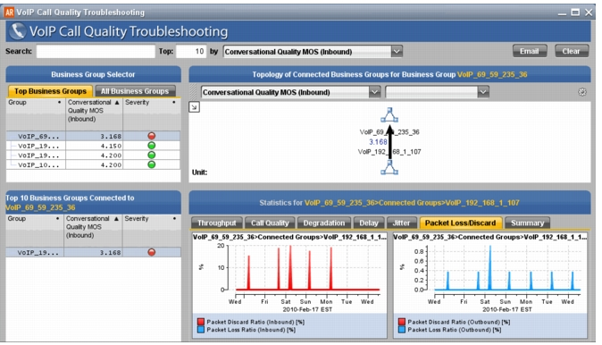

VoIP Call Quality Troubleshooting This insight is useful for troubleshooting overall VoIP performance between two Business Groups over a specific time window. You can see how VoIP performance varies by viewing time-based charts of Call Quality, Jitter, and other relevant metrics. Figure 8 VoIP Call Quality Troubleshooting 